A beginner friendly story, told with real public data. Every hard word is explained before it is used, and every number names its source.
Local build only. Source repo: github.com/jwavalosq/climate_change. This page is a local story site in GitHub Pages style. It was not published by this build.
An anomaly is not the temperature itself. It is the difference from a reference average. Here the reference is 1951 to 1980, the baseline NASA GISTEMP uses. So plus 1.0 means 1.0 degrees Celsius warmer than that average. Minus means cooler.
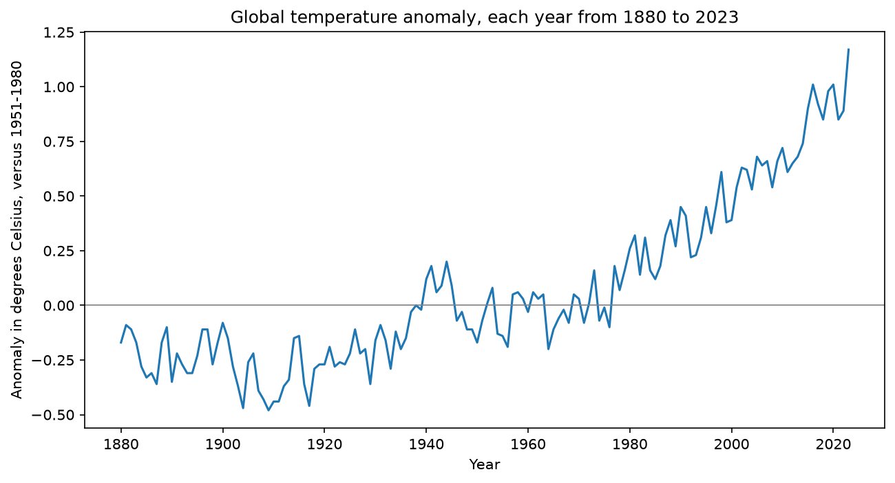
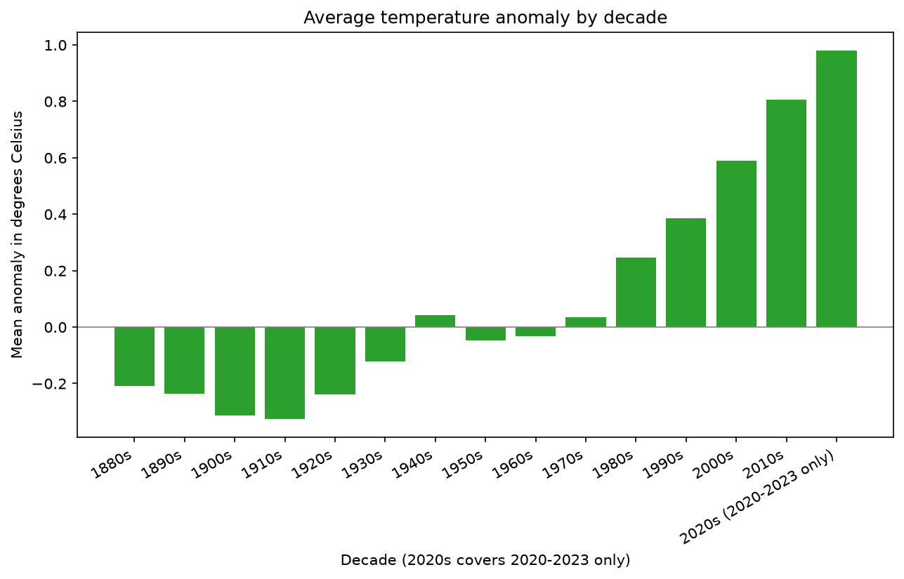
Single years jump around. Decade averages smooth out one hot or cold year, and they climb, step by step, from the 1980s onward. The warmest single year in the repo file is 2023, at plus 1.17 degrees.
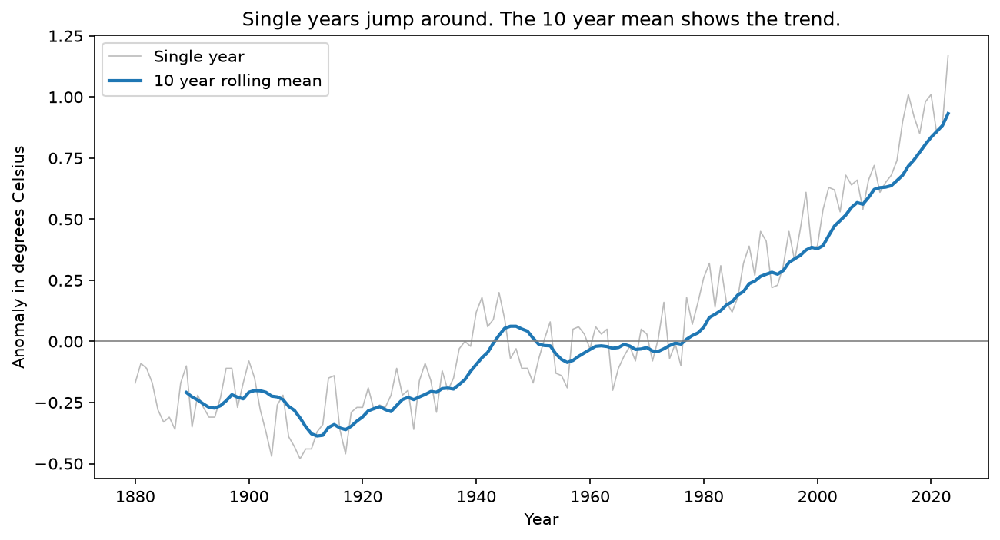
CO2 means carbon dioxide, a gas in the air. ppm means parts per million. If air had one million parts, 421 ppm means 421 of them are CO2. Mauna Loa is a NOAA station in Hawaii, far from most factories and cities, so it gives a clean background reading.
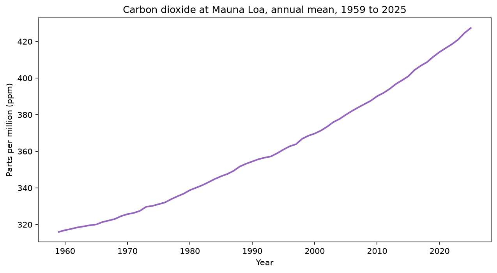
Correlation is a number from minus 1 to plus 1 that says whether two series move together. Near plus 1 means when one goes up, the other usually goes up too. For 1959 to 2023, the correlation between annual CO2 and annual temperature anomaly is 0.964, a strong positive value.
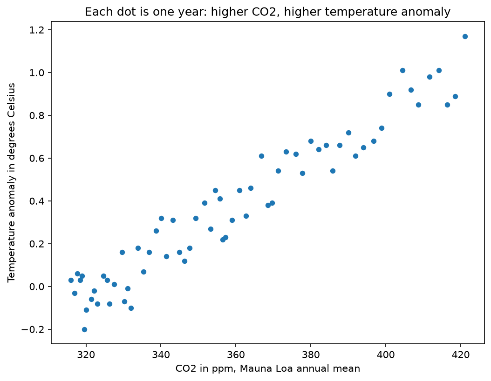
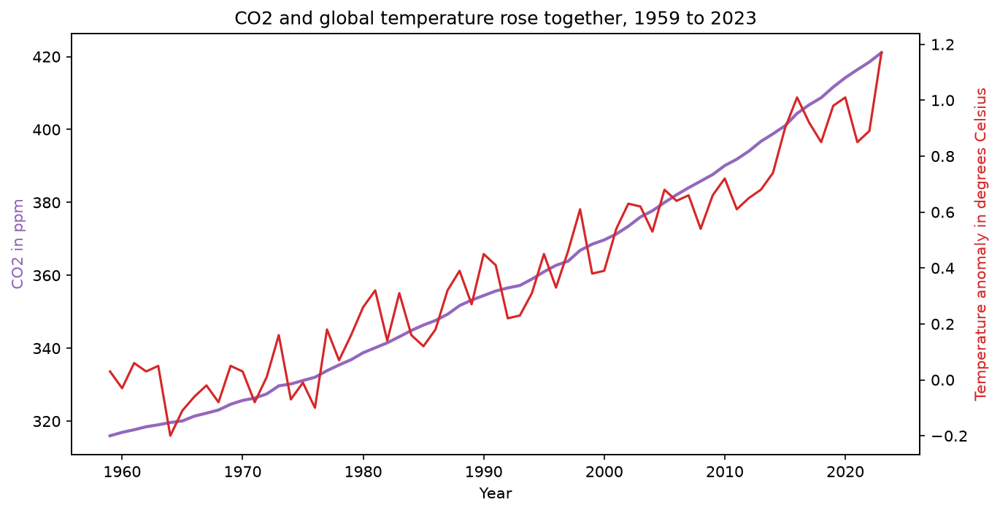
A billion-dollar disaster is a weather or climate event whose total direct losses reached at least 1 billion US dollars. Costs here are CPI adjusted, which means adjusted for inflation, so a dollar in 1980 and a dollar in 2024 are compared on a fairer basis. This dataset covers the United States only, and only events over the line. It does not count every storm or fire.
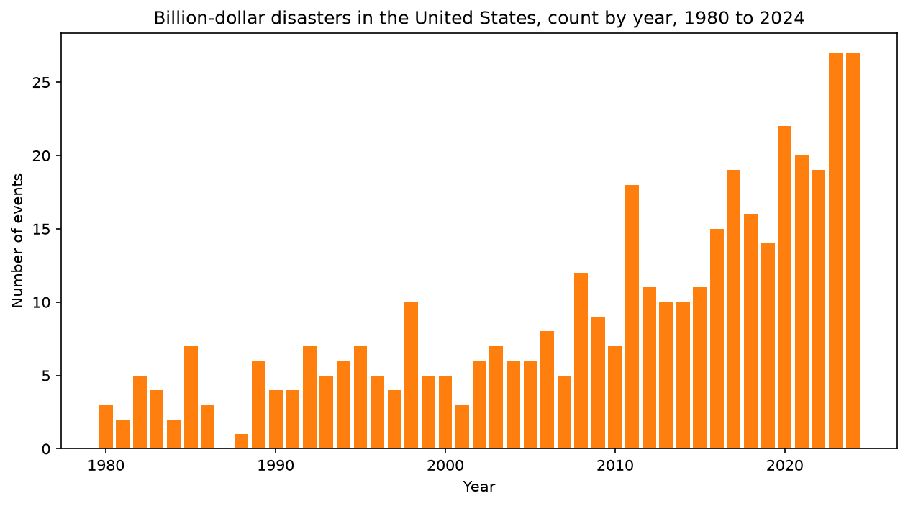
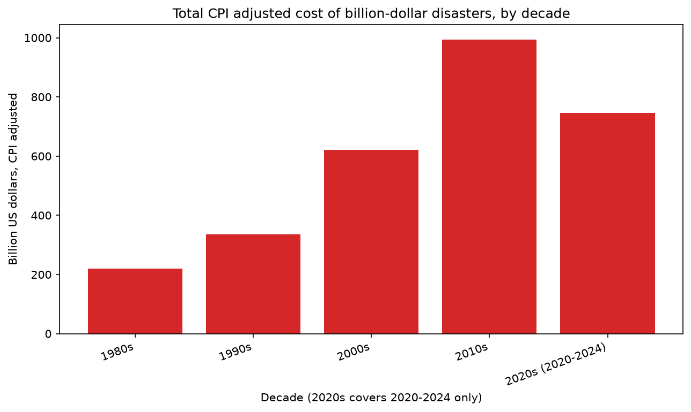
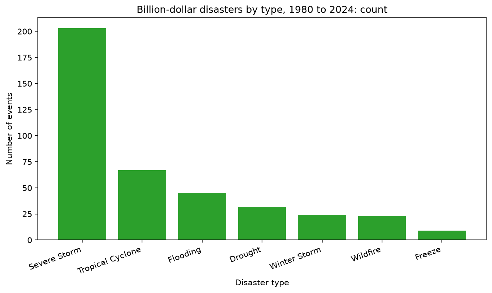
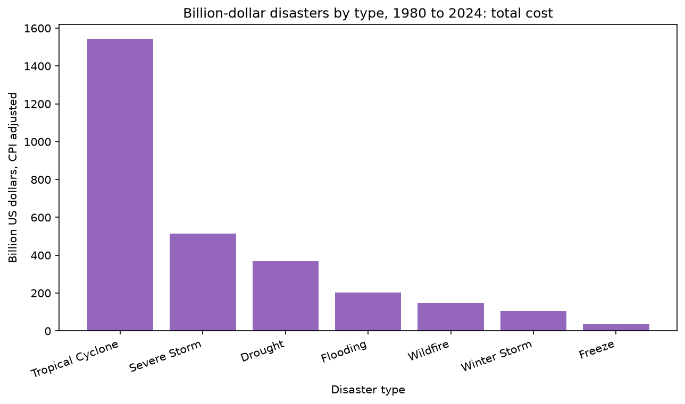
A hemisphere is one half of the Earth. A latitude band is a strip around the globe, for example 64N to 90N, the far north including the Arctic.
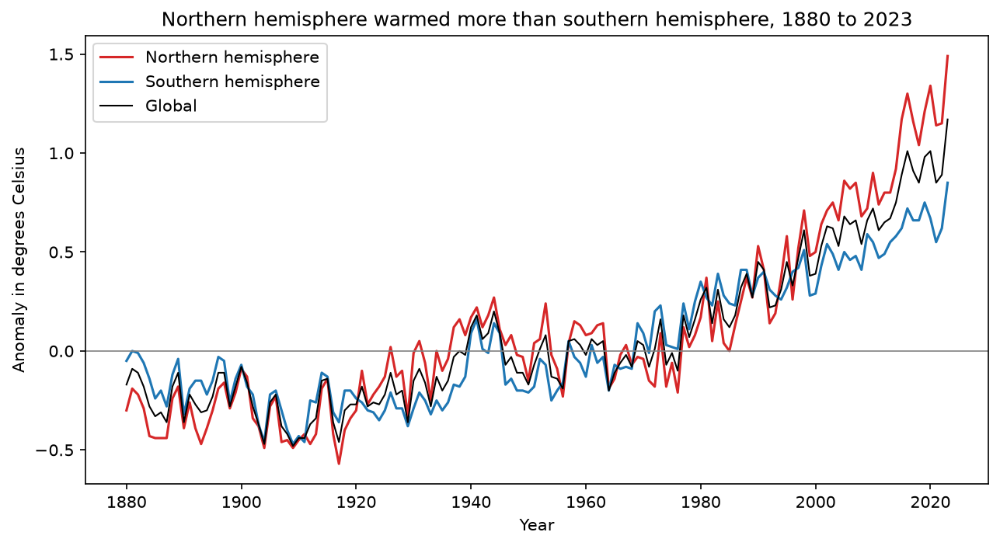
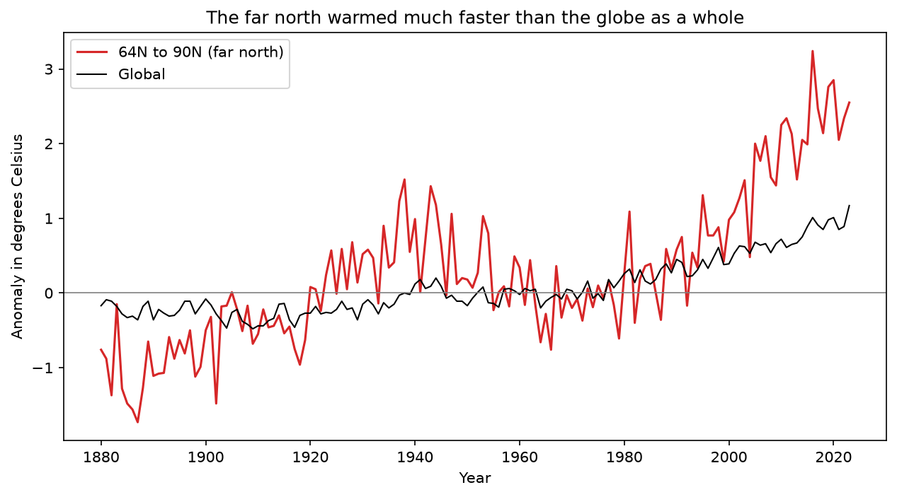
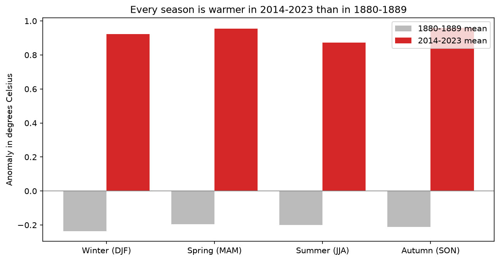
Check 1, warming pace: each decade mean minus the previous decade mean. The linear trend is 0.079 degrees per decade since 1880, 0.195 per decade since 1980, and 0.235 per decade since 2000. Recent decades warmed faster than the long run average.
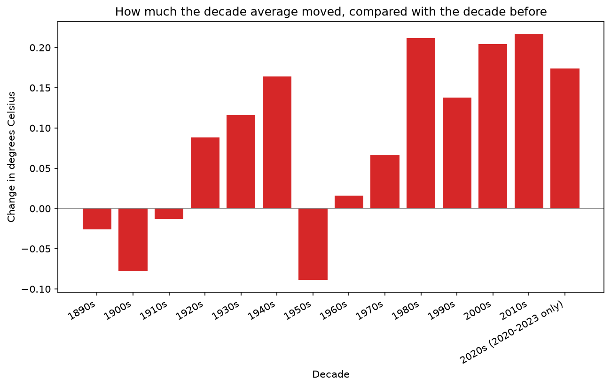
Check 2, cost versus frequency: total cost divided by event count, by decade. The average cost per event was 6.66 billion dollars in the 1980s, 5.88 in the 1990s, 9.28 in the 2000s, 7.59 in the 2010s, and 6.49 in 2020 to 2024. It bounces, it does not climb steadily, while the count climbs from 33 to 131 to 115 in five years. So the total cost rise in this dataset is driven mainly by more events, not by a steady rise in the average cost of each event.
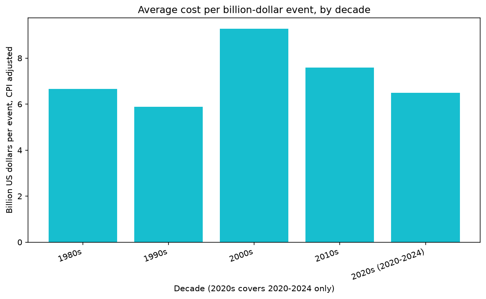
Sources: NASA GISTEMP, NOAA Global Monitoring Laboratory Mauna Loa, NOAA NCEI Billion-Dollar Disasters archive. Full URLs and coverage dates are in data/raw/PROVENANCE.md in the project folder. Notebooks, processed tables, and scripts are in the same project folder.